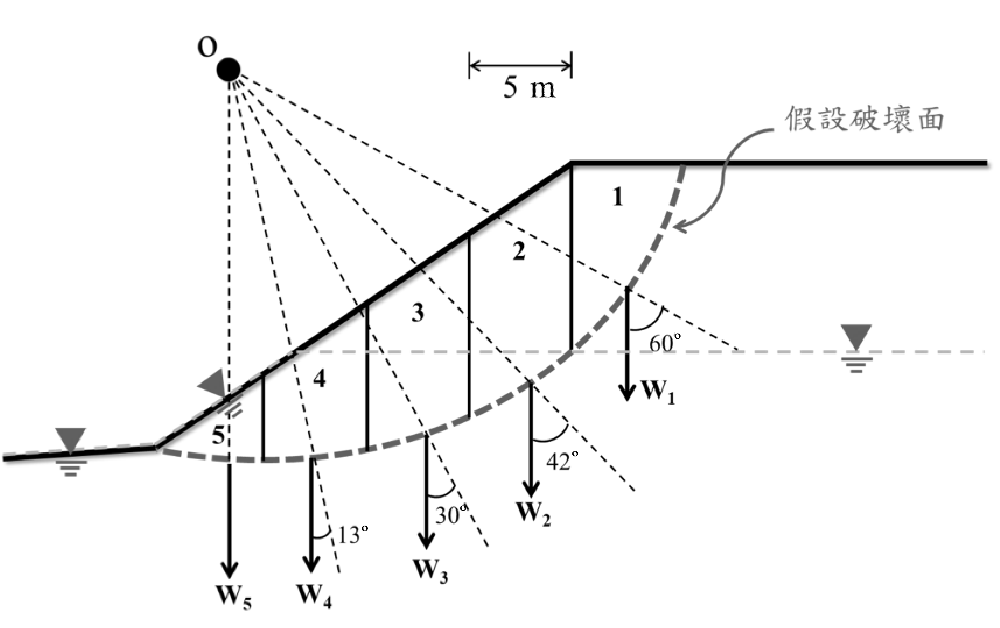
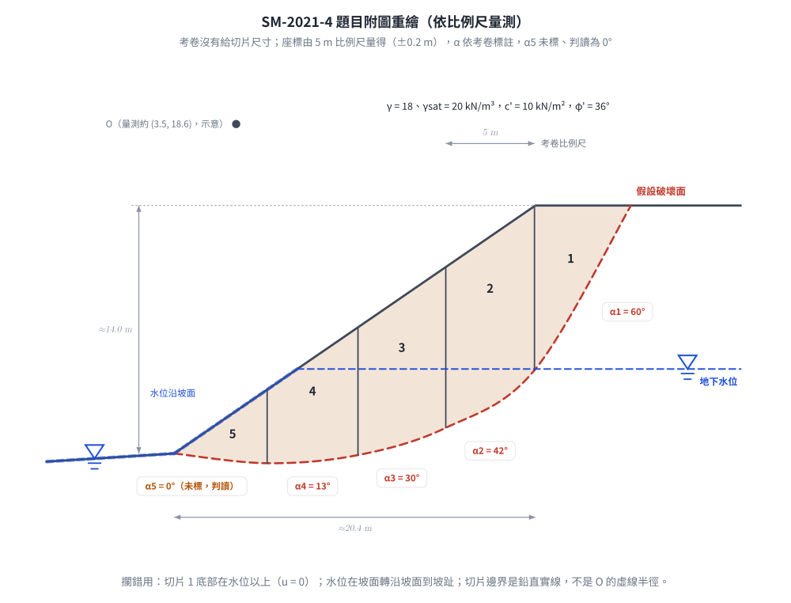
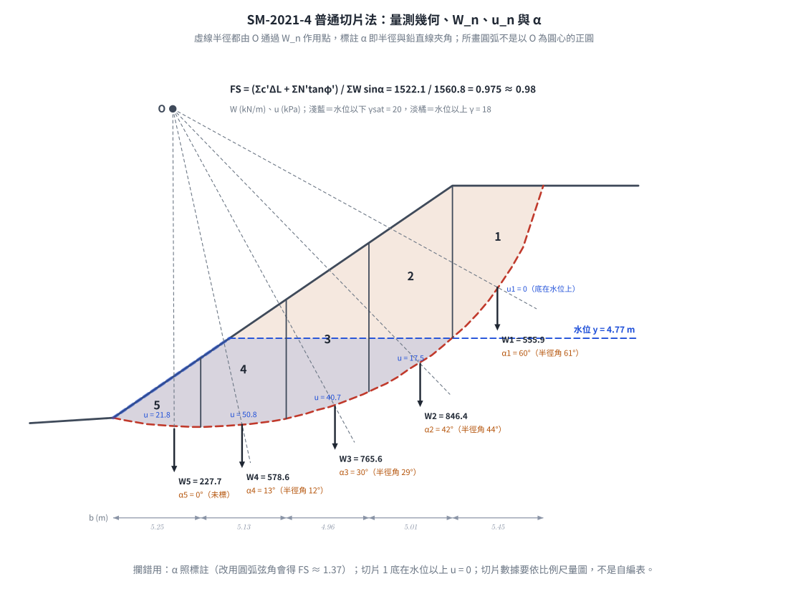

📄 題目正本：考卷原文・附圖・判讀清單（已確認）
SM-2021-4 題目正本
本檔只記錄考卷上寫了什麼、圖上畫了什麼，不含任何解法。解析見同資料夾
SM-2021-4.md。
判讀清單已確認（凍結）；本檔原則上不再修改（改動須回考卷原圖並記 log）。
| 項目 | 內容 |
|---|---|
| 考卷 | raw/exams/SM-2021_土壤力學與基礎設計.pdf 第 4 頁（頁次 4－4），第四題 |
| 考年 | 民國 110 年（2021） |
| 配分 | 25 分 |
| 附圖 | SM-2021-4-fig-2.png（邊坡切片圖；2026-11-15 由考卷重新擷取 500 dpi，考卷內嵌點陣影像原解析度約 150 dpi）；既有 SM-2021-4-fig-1.png 含公式與同一圖，O 點右下方虛線半徑上有滑鼠游標，保留不刪 |
| 判讀狀態 | 已確認（2026-11-15 關卡一：使用者授權依建議判讀確認；#1 依比例尺量測、#6 $\alpha_5$ = 0°，兩項標 ⚠ 待使用者複核；轉錄 2026-11-15；PyMuPDF 110 dpi 全頁目視，附圖 500 dpi 局部放大並以像素座標量測（5 m 比例尺 = 292.5 px，即 58.5 px/m）；盲讀後才比對既有解析） |
1. 考卷原文（逐字）
四、若有一邊坡剖面如下圖所示，且地下水位上升至圖面標示高程，請使用普通切片法，依照已分割之切片，計算此假設圓弧破壞面之安全係數 FS。請以如下給定之土壤參數來進行計算：$\gamma$ = 18 kN/m³，$\gamma_{sat}$ = 20 kN/m³，$c'$ = 10 kN/m²，$\phi'$ = 36°。（25 分）
註：普通切片法公式$$\mathrm{FS}=\frac{\sum_{n=1}^{n=p}\left[c'\Delta L_n+(W_n\cos\alpha_n-u_n\Delta L_n)\tan\phi'\right]}{\sum_{n=1}^{n=p}W_n\sin\alpha_n}$$
2. 考卷給的公式、附表與參數
- 土壤：$\gamma$ = 18 kN/m³（水位以上）、$\gamma_{sat}$ = 20 kN/m³（水位以下）、$c'$ = 10 kN/m²、$\phi'$ = 36°。
- 普通切片法公式（如上，照錄）。
- 圖上：5 個切片（1–5）、比例尺 5 m、圓心 O、各切片 $\alpha$：60°、42°、30°、13°（切片 1–4），地下水位。
- 沒有給：切片寬度、高度、底長 $\Delta L_n$、重量 $W_n$、孔隙水壓 $u_n$ 的數值（須由圖面依比例尺量測推得）、切片 5 的 $\alpha$、$\gamma_w$、半徑、坡高與坡角。
- 卷首注意事項：㈠可以使用電子計算器。㈡不必抄題，作答時請將試題題號及答案依照順序寫在試卷上，於本試題上作答者，不予計分。㈢本科目除專門名詞或數理公式外，應使用本國文字作答。
3. 附圖

圖面文字照錄：O、5 m、假設破壞面、1、2、3、4、5、60°、42°、30°、13°、W1、W2、W3、W4、W5。
4. 判讀清單
以坡趾為原點、向右 $x$、向上 $y$（m），像素量測換算，精度約 ±0.2 m。
| # | 項目 | 判讀 | 圖上／題文依據 | 把握 |
|---|---|---|---|---|
| 1 | 切片幾何的來源 | 考卷沒有給任何切片尺寸，只能依 5 m 比例尺由圖面量測；本清單 #4–#6 的量測值即為解題幾何 | 題文「依照已分割之切片」＋附圖比例尺 | 不確定（影響答案，請確認）；依建議確認：依比例尺量測（#4、#5）；⚠ 待使用者複核（考卷未給切片數據，量測精度約 ±0.2 m） |
| 2 | 比例尺 | 5 m = 292.5 px（500 dpi），兩端正好對齊切片 2 的左右兩條邊界線 | 像素量測 | 確定 |
| 3 | 邊坡輪廓 | 坡趾 (0, 0)、坡肩 (20.4, 14.0)，坡面為直線（量得斜率 0.684，約 34.4°）；坡肩右側地面水平；坡趾左側地面向左微降（約 7.2 m 降 0.46 m，判讀為近水平） | 像素量測 | 確定（解讀） |
| 4 | 切片邊界 $x$ | 0（坡趾）、5.25、10.38、15.34、20.35（坡肩鉛直線）、25.8（圓弧與坡肩地面交點）；切片寬約 5.3、5.1、5.0、5.0、5.4 m（切片 5 到 1） | 像素量測 | 確定（解讀） |
| 5 | 邊界線上下端 | $x$ = 5.25：地表 3.60、圓弧 −0.55；$x$ = 10.38：7.11、−0.09；$x$ = 15.34：10.49、1.45；$x$ = 20.35：13.92、4.70；兩端（坡趾、25.8）高度為 0 | 像素量測 | 確定（解讀） |
| 6 | 切片 $\alpha$ | 切片 1–4 依標註：60°、42°、30°、13°（$W_n$ 與通過該點之半徑夾角）；切片 5 未標，W5 與 O 的鉛直半徑重合 → 判讀 $\alpha_5$ = 0° | 附圖角度標註、W5 位置 | 不確定（影響答案，請確認）；依建議確認：$\alpha_5$ = 0°；⚠ 待使用者複核 |
| 7 | 圓心 O 與圓弧 | O 量得約 (3.5, 18.6)；所畫圓弧並非以 O 為圓心的正圓（擬合圓心約 (5.8, 21.5)、R ≈ 22.1），屬示意圖 → $\alpha$ 以標註為準，不由 O 反算 | 像素量測 | 確定（解讀） |
| 8 | 地下水位（坡體內） | 水平線，高程 $y$ ≈ 4.77 m，由坡面交點 $x$ ≈ 6.96 向右延伸到圖外；切片 1／2 邊界的圓弧端點（4.70）與水位同高，切片 1 底部全在水位以上 | 像素量測 | 確定（解讀） |
| 9 | 地下水位（坡面與坡趾外） | 由 $x$ ≈ 6.96 起沿坡面向下到坡趾（灰色虛線疊在坡面上，坡面上畫傾斜水位符號），坡趾左側水位在地面（水位符號）；坡面上沒有積水 | 附圖灰色虛線與水位符號 | 確定（解讀） |
| 10 | 單位重 | 水位以上 $\gamma$ = 18、以下 $\gamma_{sat}$ = 20 | 題文 | 確定 |
| 11 | 孔隙水壓 | 考卷只給公式中的 $u_n$，未說明取法；判讀為切片底部中點的靜水壓（$\gamma_w$ × 水位以下鉛直深度） | 題文 | 確定（解讀） |
| 12 | 切片編號與重量 | 切片 1 在坡肩側、5 在坡趾側；W1–W5 畫在各切片下方，鉛直向下 | 附圖 | 確定 |
| 13 | 考卷沒有給 | 切片尺寸、$\Delta L_n$、$W_n$、$u_n$、$\alpha_5$、$\gamma_w$、半徑、坡高、坡角 | 全題 | 確定 |
轉錄：2026-11-15（SM-U3-3 題目正本推廣・批 1）
確認：2026-11-15 使用者授權依建議判讀確認（SM-U3-3 題目正本推廣・批 1，關卡一；使用者指示「要確認的依你建議」）
考題編號：SM-2021-4
主分類： SM-U3-3 坡地工程
副分類： 無
分析法： 有效應力法
標籤： Fellenius法 瑞典圓弧法 邊坡穩定 安全係數 孔隙水壓 有效應力原理
1. 題目（考卷原文見題目正本）
考卷原文、公式／附表、附圖與判讀清單（已確認）見
SM-2021-4-problem.md。本節只列解題時最容易讀錯的地方與本解使用的記號；題意以題目正本為準。

重繪自考卷附圖，依題目正本判讀清單 #2–#12（量測精度約 ±0.2 m）；攔下的判讀錯誤：切片 5 的角度考卷沒有標、切片 1 底部在水位以上、切片邊界是鉛直實線而非 O 的虛線半徑。
常見誤讀
| 項目 | 正確判讀 | 常見誤讀 |
|---|---|---|
| 切片尺寸 | 考卷沒有給任何切片數據或表格，須依 5 m 比例尺量測（題目正本 #1–#5，已確認；⚠ 待使用者複核） | 以為另有數值表，或自行「逆推」與圖面不符的幾何 |
| $\alpha_5$ | 考卷未標；W5 與 O 的鉛直半徑重合 → 判讀 0°（#6，已確認；⚠ 待使用者複核） | 當成考卷標示 −5° |
| 切片邊界 | 四條鉛直實線；O 引出的虛線是量 $\alpha$ 用的半徑（#4、#7） | 把虛線半徑當成切片側邊界 |
| 水位 | 坡體內水平（高約 4.77 m），在坡面轉沿坡面到坡趾；切片 1 底部在水位以上（$u_1=0$）（#8、#9） | 切片 1 也計孔隙水壓；或把坡面上的水位符號當成單一滲出點 |
| $\alpha_n$ 的取法 | 依考卷標註 60°、42°、30°、13°、0°：每條虛線半徑都由 O 通過 $W_n$ 作用點，標註角就是半徑與鉛直線的夾角（Fellenius 的 $\alpha$ 定義）；考卷所畫圓弧不是以 O 為圓心的正圓，不要改用量圖的弦角（會得 FS ≈ 1.37） | 照圖量圓弧弦角（約 59°、33°、18°、6°、−6°） |
| 本解舊答 0.867 | 本解 2026-11-15 前的切片表（$b$ = 5 m、$W_2$ = 1157 kN/m…）為自編「逆推幾何」，與圖面不符；依量測幾何 FS ≈ 0.98 | 沿用舊表或另找考卷沒有的數值表 |
本解記號： $b$ 切片水平寬；$W_n$ 切片重；$\alpha_n$ 切片底部傾角；$\Delta L_n$ 切片底長；$u_n$ 切片底部中點孔隙水壓。
2. 考題核心精神與出題者意圖 (Core Concepts & Examiner's Intent)
- 普通切片法（Fellenius 法）的實作：忽略切片間力，每個切片底部的正向力取 $W_n\cos\alpha_n-u_n\Delta L_n$，以力矩平衡（圓心 O）得到考卷給的 FS 公式。
- 由圖面取得切片數據：考卷只給 5 m 比例尺與 $\alpha_1$–$\alpha_4$，切片寬、高、重量、孔隙水壓都要依比例尺量圖推得（題目正本 #1）。這是本題最花時間、也最容易「自編數據」的地方。
- 地下水位與有效應力：水位以上用 $\gamma$ = 18、以下用 $\gamma_{sat}$ = 20 計重量；切片底部孔隙水壓 $u_n=\gamma_w h_w$ 由抗滑項扣除。切片 1 底部在水位以上，$u_1=0$。
- $\alpha$ 的意義：$\alpha_n$ 是過切片底部作用點的半徑與鉛直線夾角（= 底部傾角）。切片 5 的 $W_5$ 落在 O 的鉛直半徑上，$\alpha_5=0$，對驅動力矩沒有貢獻。
3. 解題戰略地圖與陷阱分析 (Strategic Roadmap & Trap Analysis)
戰略地圖：
- 量圖：以坡趾為原點，用 5 m 比例尺換算坡面、坡肩、水位、四條切片邊界線與圓弧（題目正本 #2–#5、#8）。
- 切片重量：每個切片分成水位以上、以下兩塊面積，$W_n=\gamma A_{dry}+\gamma_{sat}A_{sat}$。
- 底長與水壓：$\Delta L_n=b_n/\cos\alpha_n$；$u_n=\gamma_w h_w$，$h_w$ 為切片底部中點到水位（坡面段為到地表）的鉛直距離。
- 列表求和：$\sum c'\Delta L_n$、$\sum(W_n\cos\alpha_n-u_n\Delta L_n)\tan\phi'$、$\sum W_n\sin\alpha_n$，代入考卷公式。
陷阱分析：
- 陷阱 1：以為另有數值表／自編幾何：考卷沒有切片表。量圖精度約 ±0.2 m，答案只能到兩位有效數字（FS ≈ 0.98，量測範圍 0.97–1.00），寫清楚量測方法即可。
- 陷阱 2：$\alpha$ 用量的還是用標的：考卷所畫圓弧不是以 O 為圓心的正圓，量得的弦角比標註小 2°–12°。標註角與 O 的虛線半徑一致，是題目給定值，照用（見 §5）。
- 陷阱 3：切片 1 誤計水壓：切片 1／2 邊界的圓弧端點高 4.70 m，與水位 4.77 m 幾乎同高，切片 1 的底部全在水位以上，$u_1=0$。
- 陷阱 4：坡面段水位：水位在 $x$ ≈ 6.96 m 處與坡面相交後沿坡面到坡趾（題目正本 #9），切片 4 左段與切片 5 的水位就是地表，坡面上沒有積水重量。
3.5 變數層次分析 (Variable Hierarchy Analysis)
最終目標
以普通切片法求假設圓弧破壞面之安全係數 FS（切片幾何依比例尺量測）
本題關鍵公式（依計算順序）
切片重量與底長：
$$ W_n = \gamma A_{dry,n} + \gamma_{sat} A_{sat,n} \qquad \Delta L_n = \frac{b_n}{\cos\alpha_n} $$
孔隙水壓力（切片底部中點）：
$$ u_n = \gamma_w h_{w,n} $$
安全係數（考卷公式）：
$$ \text{FS} = \frac{\sum [c' \boxed{\Delta L_n} + (\boxed{W_n} \cos\alpha_n - \boxed{u_n} \boxed{\Delta L_n})\tan\phi']}{\sum \boxed{W_n} \sin\alpha_n} $$
L1：題目直接給定
| 符號 | 數值 | 說明 |
|---|---|---|
| $c'$ | $10 \text{ kN/m}^2$ | 有效凝聚力 |
| $\phi'$ | $36^\circ$ | 有效內摩擦角 |
| $\gamma$ | $18 \text{ kN/m}^3$ | 水位以上單位重 |
| $\gamma_{sat}$ | $20 \text{ kN/m}^3$ | 水位以下飽和單位重 |
| $\alpha_1$–$\alpha_4$ | 60°、42°、30°、13° | 考卷圖上標註 |
| 比例尺 | 5 m | 圖上量得 58.5 px/m（500 dpi），切片尺寸全由此換算 |
L2：需知識點推導
| 符號 | 公式／來源 | 卡關? |
|---|---|---|
| 切片幾何 | 依比例尺量測（題目正本 #3–#5、#8；±0.2 m） | ✔ |
| $\alpha_5$ | 未標；$W_5$ 落在 O 的鉛直半徑上 → 0°（題目正本 #6） | |
| $\gamma_w$ | 未給，取 9.81 kN/m³ | |
| $W_n$ | $\gamma A_{dry}+\gamma_{sat}A_{sat}$ | |
| $\Delta L_n$ | $b_n/\cos\alpha_n$ | |
| $u_n$ | $\gamma_w h_w$（底部中點） |
L3：深層知識（不懂就卡住）
| 知識點 | 說明 | 卡關? |
|---|---|---|
| $\alpha$ 的定義 | 過切片底部作用點的半徑與鉛直線夾角，等於底部切線傾角（正圓時）；考卷標註值就是這個角 | ✔ |
| 有效應力 | 抗滑摩擦只由有效正向力 $W\cos\alpha-u\Delta L$ 提供；水位以上 $u=0$ | |
| 普通切片法的保守性 | 忽略切片間力，FS 通常比 Bishop 簡化法低；有孔隙水壓時 $W\cos\alpha-u\Delta L$ 可能偏低甚多 |
4. 步驟化詳細計算過程 (Step-by-Step Detailed Calculation)
💡 考卷沒有給任何切片數據，以下幾何全部依 5 m 比例尺由考卷附圖量測（500 dpi，58.5 px/m，坡趾為原點、向右 $x$、向上 $y$），精度約 ±0.2 m；量測值見題目正本判讀清單 #3–#5、#8。$\gamma_w$ = 9.81 kN/m³。
Step 1：量測幾何
- 坡面：坡趾 (0, 0) 到坡肩 (20.35, 13.92)，斜率 0.684（約 34.4°）；坡肩右側地面水平 $y$ = 13.92 m。
- 地下水位：坡體內水平 $y$ = 4.77 m，與坡面交於 $x$ ≈ 6.96 m，此點以左水位沿坡面到坡趾。
- 切片邊界（鉛直線）$x$ = 0、5.25、10.38、15.34、20.35、25.8 m；圓弧在邊界上的高程 0、−0.55、−0.09、1.45、4.70、13.92 m。
- 邊界之間的圓弧依同一量測框架每約 0.7 m 描一點（例：$x$ = 23.2 m 處 $y$ = 8.0 m，即 $W_1$ 作用點），以折線內插計算面積。
Step 2：切片重量 $W_n$
各切片面積以數值積分求得（水位以上／以下分開）：
| 切片 | $x$ 範圍 (m) | $b_n$ (m) | $A_{dry}$ (m²) | $A_{sat}$ (m²) | $W_n=18A_{dry}+20A_{sat}$ (kN/m) |
|---|---|---|---|---|---|
| 1 | 20.35–25.80 | 5.45 | 30.88 | 0 | 555.9 |
| 2 | 15.34–20.35 | 5.01 | 37.25 | 8.79 | 846.4 |
| 3 | 10.38–15.34 | 4.96 | 19.97 | 20.31 | 765.6 |
| 4 | 5.25–10.38 | 5.13 | 3.97 | 25.36 | 578.6 |
| 5 | 0–5.25 | 5.25 | 0 | 11.39 | 227.7 |
Step 3：底長 $\Delta L_n$ 與孔隙水壓 $u_n$
$h_w$ 取切片底部中點到水位（切片 5 中點在坡面段，到地表）的鉛直距離：
| 切片 | $\alpha_n$ | $\Delta L_n=b_n/\cos\alpha_n$ (m) | 底部中點 $y$ (m) | $h_w$ (m) | $u_n$ (kPa) |
|---|---|---|---|---|---|
| 1 | 60° | 10.90 | 7.80 | 0（在水位以上） | 0 |
| 2 | 42° | 6.74 | 2.98 | 1.79 | 17.5 |
| 3 | 30° | 5.73 | 0.62 | 4.15 | 40.7 |
| 4 | 13° | 5.26 | −0.40 | 5.17 | 50.8 |
| 5 | 0° | 5.25 | −0.42 | 2.22 | 21.8 |
Step 4：列表求和
$\tan 36^\circ = 0.7265$
| 切片 | $W_n\cos\alpha_n$ | $u_n\Delta L_n$ | $N'_n=W_n\cos\alpha_n-u_n\Delta L_n$ | $c'\Delta L_n$ | $N'_n\tan\phi'$ | $W_n\sin\alpha_n$ |
|---|---|---|---|---|---|---|
| 1 | 277.9 | 0 | 277.9 | 109.0 | 201.9 | 481.4 |
| 2 | 629.0 | 118.3 | 510.7 | 67.4 | 371.1 | 566.4 |
| 3 | 663.1 | 233.0 | 430.0 | 57.3 | 312.4 | 382.8 |
| 4 | 563.8 | 267.3 | 296.5 | 52.6 | 215.4 | 130.2 |
| 5 | 227.7 | 114.3 | 113.5 | 52.5 | 82.4 | 0 |
| Σ | 338.8 | 1183.3 | 1560.8 |
（單位：kN/m）
Step 5：安全係數
$$ \text{FS} = \frac{\sum c'\Delta L_n + \sum N'_n\tan\phi'}{\sum W_n\sin\alpha_n} = \frac{338.8 + 1183.3}{1560.8} = \frac{1522.1}{1560.8} = 0.975 $$
$$ \boxed{\text{FS} \approx 0.98} $$

圖 2 量測幾何與各切片 $W_n$、$u_n$、$\alpha_n$。標註 $\alpha$ 就是 O 到 $W_n$ 作用點的半徑角，所畫圓弧則不是以 O 為圓心的正圓；攔下「改用圓弧弦角（FS ≈ 1.37）」「切片 1 也計水壓」「沿用自編切片表」三種錯誤。
量測不確定的影響（交叉驗算）：圓弧整體上下移 ±0.2 m → 0.965～0.986；$\Delta L_n$ 改用量測弦長 → 0.983；$\gamma_w$ = 10 → 0.969；獨立盲解另行量測（58.4 px/m、圓弧以 $W_n$ 作用點補點）得 0.99。結論：FS ≈ 0.98（約 0.97–1.00），小於或約等於 1，邊坡處於臨界／不穩定狀態。
5. 關鍵爭議點與進階探討 (Critical Issues & Advanced Discussion)
-
$\alpha$ 取標註值，不取量圖弦角：
考卷每條虛線半徑都由 O 通過 $W_n$ 的作用點（圓弧上），標註的 60°、42°、30°、13° 就是這些半徑與鉛直線的夾角——正是 Fellenius 法 $\alpha_n$ 的定義；量得的半徑角約 61°、44°、29°、12°、0°，與標註相符。問題出在所畫的圓弧不是以 O 為圓心的正圓（O 到圓弧上各 $W_n$ 作用點的距離由 22.2 m 遞減到 19.2 m），所以若改量圓弧弦角（約 59°、33°、18°、6°、−6°），會得到 FS ≈ 1.37。題目在圖上明白標出 $\alpha$，屬題給參數，照用；弦角只作對照。 -
$\alpha_5$：考卷未標。$W_5$ 落在 O 的鉛直半徑上，依同一定義 $\alpha_5=0$（題目正本 #6）。若照圖面底弦取約 −6°，FS = 0.99；取 −5° 則 0.987，影響很小。
- 本解 2026-11-15 前的答案 0.867 為何不對：舊表以 $b$ = 5 m 與「逆推幾何模型」自編各切片重量（$W_2$ = 1157、$W_3$ = 1288 kN/m 等，比圖面量得的 846、766 kN/m 大 35%–70%），把 $\alpha_5$ 寫成考卷標示 −5°（考卷沒有標），又給切片 1 計 $u_1$ = 9.8 kPa（切片 1 底部在水位以上），並稱「請引用題卷上給定之數值表」——考卷並無此表。
- 量圖題的作答建議：考場上先寫出比例尺換算與各切片 $b$、平均高度、水位深度的量測值，再列表計算；量測誤差 ±0.2 m 只造成 FS 約 ±0.01–0.02 的變化，閱卷重點在流程與水壓、角度的處理。
- 普通切片法的保守性：Fellenius 法忽略切片間力，FS 常比 Bishop 簡化法低 5%–20%；有較高孔隙水壓時更明顯。改用 Bishop 簡化法通常會得到較高的 FS，但題目指定普通切片法。
- 規範：本題為力學計算，題目未要求規範安全係數門檻，未涉規範公式或係數；現行規範對永久邊坡的安全係數要求遠高於 1，本題結果僅說明此滑動面在高水位下處於臨界。
修正日期：2026-11-15（§1 改為指向題目正本 SM-2021-4-problem.md，重繪附圖 figs/SM-2021-4-fig-1-problem.svg；§4 Step 5 補解題圖解 figs/SM-2021-4-fig-2-slices.svg；非勘誤）
修正日期：2026-11-15（FIX：改依比例尺量測幾何重算——FS 0.867 → 0.98；舊解切片數值表（$b$ = 5 m、$W_2$ = 1157 kN/m…）為自編、$\alpha_5$ = −5° 非考卷所給、切片 1 誤計孔隙水壓；§1 移除待勘誤警示並補常見誤讀兩列，§2、§3、§3.5、§4、§5 重寫。切片幾何依 5 m 比例尺量測（58.5 px/m，±0.2 m）；$\alpha$ 取考卷標註值、量圖弦角列 §5 對照。驗證：scripts/fixes/2026-11-15_verify_SM-2021-4.py 重算 61 個正本數值＋6 個對照值 MISMATCHES: 0，10 個切片面積以數值積分與多邊形面積兩路徑交叉驗算；依 2026-11-15 獨立盲解比對）